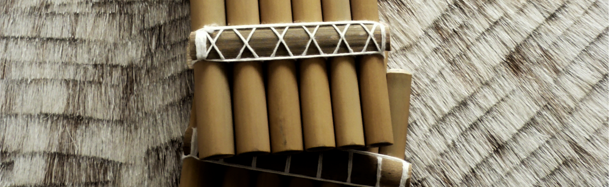

Índice de instrumentos
Inicio > Índice de instrumentos
Este índice reúne los instrumentos tratados de forma sustancial en los libros, apuntes y notas de Instrumentarium. Los nombres alternativos remiten a una sola entrada, y cada entrada conecta materiales publicados en formatos diferentes.
El índice no pretende registrar todavía todos los instrumentos mencionados incidentalmente dentro de obras panorámicas. Crece a medida que cada nombre recibe una presencia documental suficiente dentro del sitio.
A
Añáchi
Temas: Instrumentos de los Ava
Notas
Angúa guásu
Temas: Instrumentos de los Ava
Angúa rái
Temas: Instrumentos de los Ava
Notas
Arco musical
También: arcos musicales.
Temas: Arcos musicales
Arrabel de Orellana
También: arrabel amazónico.
Temas: Cordófonos frotados · Fuentes históricas y documentación organológica
Apuntes
B
Bajón
También: bajones.
Temas: Trompetas y bocinas
Libros
Bocina de banda mocha
También: bocina de calabaza.
Temas: Grabaciones, repertorios y circulación · Trompetas y bocinas
Bombo andino
También: bombo.
Temas: Conjuntos y prácticas sonoras andinas · Grabaciones, repertorios y circulación
Apuntes
Botella silbadora Huari
También: vasija silbadora Huari.
Temas: Arqueología musical · Silbatos y vasijas silbadoras
Apuntes
Buxíxh
C
Caña de millo
También: flauta de millo, pito atravesao.
Temas: Clarinetes tradicionales · Grabaciones, repertorios y circulación
Apuntes
Caparazón de tortuga
También: tortuga sonora.
Temas: Flautas de Pan · Idiófonos percutidos · Instrumentos y materiales animales
Charango
Temas: Conjuntos y prácticas sonoras andinas · Grabaciones, repertorios y circulación
Apuntes
Chirimía del Cauca
También: flauta de chirimía.
Temas: Conjuntos y prácticas sonoras andinas · Flautas traversas · Fuentes históricas y documentación organológica
Apuntes
Clarinetes sudamericanos
Temas: Clarinetes tradicionales · Fuentes históricas y documentación organológica
Libros
Clarinetes tradicionales
Temas: Clarinetes tradicionales
E
Erquencho
También: erque, erke, erkencho, irqi.
Temas: Clarinetes tradicionales · Conjuntos y prácticas sonoras andinas
Libros
F
Flauta de cabeza de cera
También: flautas de cabeza de cera.
Flauta de Pan
También: flautas de Pan, zampoña.
Temas: Conjuntos y prácticas sonoras andinas · Flautas de Pan · Fuentes históricas y documentación organológica · Idiófonos percutidos · Instrumentos y materiales animales · Sikus y bandas de sikuris
Libros
Flauta doble
También: flautas dobles.
Temas: Conjuntos y prácticas sonoras andinas · Flautas dobles
Apuntes
Flauta traversa andina
También: flautas traversas andinas.
Temas: Conjuntos y prácticas sonoras andinas · Flautas traversas · Fuentes históricas y documentación organológica
Apuntes
Flautas de conducto externo
Temas: Flautas de conducto
Apuntes
Flautas de una mano
Temas: Conjuntos y prácticas sonoras andinas · Flautas de una mano · Fuentes históricas y documentación organológica · Quenas y flautas de muesca
Furro
También: furruco.
Temas: Grabaciones, repertorios y circulación · Membranófonos de fricción
Apuntes
G
Gaita de Cajamarca
También: gaita de Hualgayoc.
Temas: Conjuntos y prácticas sonoras andinas · Flautas dobles
Apuntes
H
Hathpang
Temas: Cordófonos frotados · Fuentes históricas y documentación organológica
Apuntes
I
Iguaéru
Instrumentos de cráneos animales
K
Kamacheña
También: camacheña, quenilla, flautilla de Pascua, flautilla chaquense.
Temas: Conjuntos y prácticas sonoras andinas · Flautas de una mano · Fuentes históricas y documentación organológica · Quenas y flautas de muesca
L
Litófono
También: estalactitas sonoras.
Temas: Arqueología musical · Idiófonos percutidos
Apuntes
M
Mbiké
Temas: Cordófonos frotados · Fuentes históricas y documentación organológica
Apuntes
Michi rái
Temas: Instrumentos de los Ava
Notas
Mohoceño
También: mohoseño, moseño, moxeño.
Temas: Conjuntos y prácticas sonoras andinas · Pinkillos, tarkas y flautas de conducto andinas
Libros
N
Natïraixh
P
Pinguyo
Temas: Instrumentos de los Ava
Notas
Pinkillo
También: pinkillu, pinquillo.
Temas: Conjuntos y prácticas sonoras andinas · Pinkillos, tarkas y flautas de conducto andinas
Libros
Q
Quena
También: kena.
Temas: Arqueología musical · Conjuntos y prácticas sonoras andinas · Grabaciones, repertorios y circulación · Quenas y flautas de muesca
Libros
S
Sananáx
Siku
También: zampoña.
Temas: Conjuntos y prácticas sonoras andinas · Flautas de Pan · Grabaciones, repertorios y circulación · Sikus y bandas de sikuris
Apuntes
Silbato andino
También: silbatos andinos.
Temas: Conjuntos y prácticas sonoras andinas · Silbatos y vasijas silbadoras
Silbatos de los Ava
Temas: Instrumentos de los Ava · Silbatos y vasijas silbadoras
Notas
Sonajas de ojos de venado
También: sonajeros de ojos de venado.
Temas: Fuentes históricas y documentación organológica · Instrumentos y materiales animales · Sonajas y sonajeros
Apuntes
T
Tarka
También: tarqa, anata, pinkillu, pinkayllu.
Temas: Conjuntos y prácticas sonoras andinas · Pinkillos, tarkas y flautas de conducto andinas
Libros
Temímby guásu
Temas: Instrumentos de los Ava
Temímby púku
Temas: Instrumentos de los Ava
Temímby ye piása
Temas: Instrumentos de los Ava
Tijeras de la Danza de las Tijeras
También: tijeras musicales.
Temas: Conjuntos y prácticas sonoras andinas · Cordófonos frotados · Idiófonos percutidos
Trompeta larga andina
También: clarín, erque, caña, corneta.
Temas: Conjuntos y prácticas sonoras andinas · Trompetas y bocinas
Turúmi
Temas: Instrumentos de los Ava
Notas
Tyopïx
V
Violín tradicional
También: violines tradicionales.
Temas: Conjuntos y prácticas sonoras andinas · Cordófonos frotados · Idiófonos percutidos
Libros
W
Wakaránty
Waqra phuku
También: waqrapuku, wakrapuku.
Temas: Conjuntos y prácticas sonoras andinas · Instrumentos y materiales animales · Trompetas y bocinas
Apuntes
Y
Yoresoma
Yoresóx
Z
Zumbador
También: bramadera, churinga, bullroarer.
Temas: Zumbadores
Apuntes